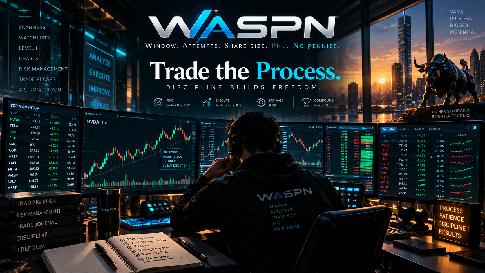

Intraday Risk & Process Operating System
An evidence-led framework designed to control trading windows, attempts, behavioural risk and daily loss exposure while creating a structured record of execution quality.
Primary Window
9–11 AM ET
Max Attempts
5
Hard Stop
-$100
Objective
+$50
Checking session…
Step 1 • Live Trading
OPEN LIVE RISK →
Today
Connected New York trading-day record.
Attempts
0/5
P&L
—
Compliance
—
Process
—
WASPN Workflow
The operating sequence from live control through session review.
1
Live Risk
Control trading window, attempts, realised P&L, loss limits and behavioural risk.
2
Journal
Capture ticker, side, entry, exit, shares and realised trade result with minimal intraday input.
3
End Session
Confirm structural compliance and behavioural process execution.
4
Performance Review
Review financial results, risk controls and process outcomes, with broker reconciliation added later.
WASPN Platform
Live control, rapid capture and performance review.
Live Risk Control
Real-time session guardrails, loss intervention and behavioural circuit breaker.
Trading Journal
Fast intraday capture of trade economics with later broker-data enrichment.
End Session
Structural compliance checks and five-point behavioural process score.
Performance Review
Review daily P&L, attempts, risk events and process outcomes over time.
Data Backup
Export and restore WASPN local records.
Evidence Behind the Guardrails
Selected findings from the historical dataset used to develop this prototype.
9:00–9:30 ET
+$10.67
Historical average per trade
Attempts 1–5
+$343
9–11 ET historical sample
Attempts 6+
-$1,031
9–11 ET historical sample
After 11 ET
-$4,768
Historical sample
Prototype figures describe the historical dataset used to develop the current WASPN ruleset. They are not presented as universal trading-performance claims.
WASPN • Trade the Process
